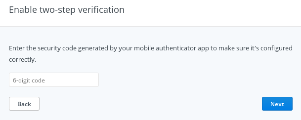

Step 2: TOTP Login
If a user is configured for two-factor authentication and username/password is verified, Yosai signals to the calling application to collect 2FA information from its client by raising an AdditionalAuthenticationRequired exception.
try:
new_subject.login(password_token)
except AdditionalAuthenticationRequired:
# this is pseudocode:
request_totp_token_from_client()
Additionally, Yosai will call an MFADispatcher, if one is configured, to send information to the client. One such implementation of an MFADispatcher is an SMSDispatcher that SMS messages a client a newly-generated TOTP token (a 6-digit integer). The Dispatcher is called prior to raising the AdditionalAuthenticationRequired exception.

TOTP Authentication Step 3: TOTP Key Entry
Client is prompted to enter a TOTP token. Client submits the requested totp token to the server, authenticating itself.

Server-side Second Authentication Request: TOTPToken
with Yosai.context(yosai):
new_subject = Yosai.get_current_subject()
totp_token = TOTPToken(client_provided_totp_token)
try:
new_subject.login(totp_token)
except IncorrectCredentialsException:
# incorrect totp token provided
except LockedAccountException:
# too many failed TOTP authentication attempts, account locked
except InvalidAuthenticationSequenceException:
# when TOTPToken authentication is attempted prior to username/password
Token Consumption
In order to control for a one-time password to truly be used once, Yosai caches the TOTP Token that successfully authenticated. If an attacker were to try to replay totp authentication, any subsequent TOTP authentication of the valid token would raise an IncorrectCredentialsException. Granted, without this token consumption facility, an attacker would have a very small window of opportunity – seconds – to replay a TOTP Token before a new one would be required for authentication.